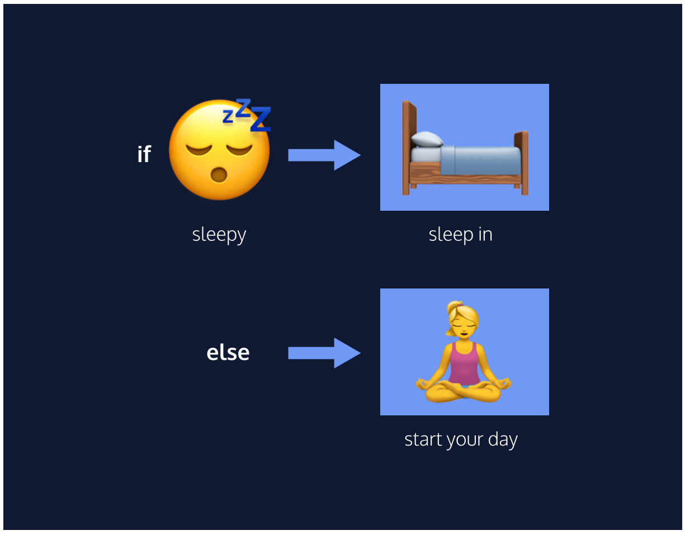
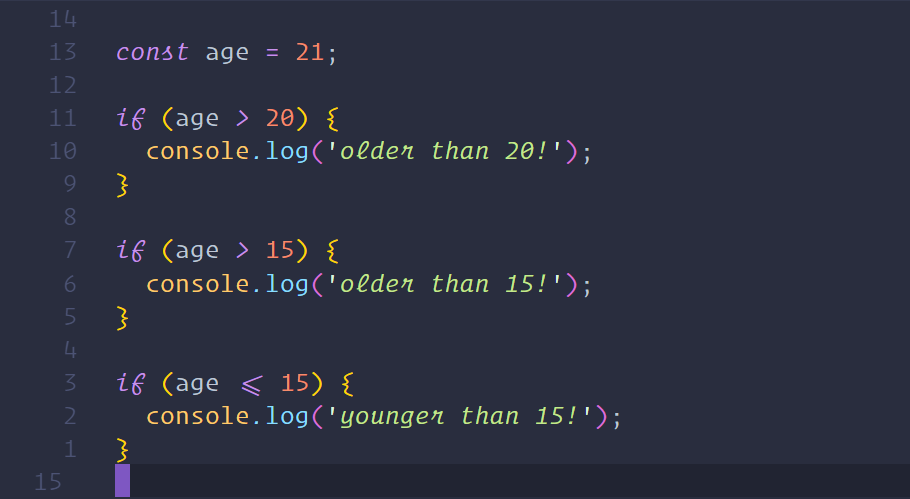
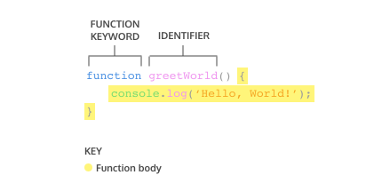
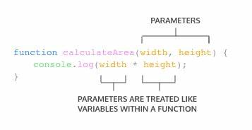

You may notice most of this information will be a repeat of W3Schools.org Javascript however all coding done on this web page will of been created by myself and not just copied and paste.
Javascript is one of the 3 languages all web developers must learn:
JavaScript can change HTML content. One of many JavaScript HTML methods is getElementById() The example below "finds" an HTML element with (with id="demo"), and changes the element content (innerHRML) to "Hello JavaScript":
JavaScript can change HTML content
JavaScript can change HTML attribute values.
In this case JavaScript changes the value of the src (source) attribute of an image.

JavaScript can also change the style of an HTML element.
JavaScript can show and hide HTML elements.
In HTML, JavaScript code is inserted between the Script tags. Old JavaScirpt examples may use a type of attribute: script type="text/Javascript."> The type attribute is not required. JavaScript is the default scripting language in HTML. Placing scripts at the bottom of the body element improves the display speed, because script interpretation slows down the display.
Scripts can also be placed in external files like CSS, this is practical when the same code is used in many different web pages. JavaScript files have the file extension .js.
Hello World (example of external .js)
Placing scripts in external files has some advantages:
An external reference can be referenced in 3 different ways:
JavaScript can "display" data in different ways:
To access an HTML element, JavaScript can use the document.getElementById(id) method. The id defines the HTML element. The innerHTML property defines the HTML content.
Using window alert will display data in a windowed box. Below I have programmed the button to answer the question 5+5 and give the answer in a windowed box once clicked:
//This isnt completed consolelog() neeeds to be put in.In life, we make decisions based on circumstances. Think of an everyday decision as mundane as falling asleep — if we are tired, we go to bed, otherwise, we wake up and start our day. These if-else decisions can be modeled in code by creating conditional statements. A conditional statement checks a specific condition(s) and performs a task based on the condition(s).
An example of this can be seen below
We often perform a task based on a condition. For example, if the weather is nice today, then we will go outside. If the alarm clock rings, then we will shut it off. If we are tired, then we will go to sleep.
In programming, we can also perform a task based on a condition using an IF statement.
Notice in the example above, we have an IF statement. The IF statement is composed of:
In the example provided above because the variable of 'Age' is equal to 21, console will log 'older then 20!', as well as 'older then 15!'. If we wanted to add some default behavior to the if statement, we can add an else statement to run a block of code when the condition evaluates to false. For more information on If...Else... statements Click Here!
When writing conditional statements, sometimes we need to use different types of operators to compare values. These operators are called comparison operators.
Here is a list of some handy comparison operators and their syntax:
Comparioson operators compare the value on the left with
the value on the right.
For example:
10 < 12
It can be helpful to think of comparison statements as questions. When the answer is "yes", the statement evaluates to true, and when the answer is "no", the statement evaluates to false. The code above would be asking: is 10 less then 12? Yes! So 10 < 12 evaluates to true. We can also use comparison operators on different data types like strings:
'apples' === 'oranges'
This statement would be false.
In the example above, we are using the identity operator (===)
to check if the string 'apples is the same as the string 'oranges'. Since the two
strings are not the same, the comaprison statement evaluates to false.
All comparison statments evaluate to either true or false and are made up of:
Working with conditionals means that we will be using booleans, true or false values. In JavaScript, there are operators that work with boolean values known as kogical operators. We can use logical operators to add more sophisticated logic to our conditionals. There are three logical operators:
In the spirit of using short-hand syntax, we can use a ternary operator
to simplify an if...else statement.
Take a look at the if...else statement example:

We can use an ternary operator to perform the same functionality.
In the example above:
Like if...else statements, ternary operators can be used for conditions which evaluate to true or false.
We can add more conditions to our if...else with an Else if statement. The else if statement allows for more than two possible outcomes. You can add as many else if statements as you would like, to make more complex conditionals!
The else if statement always comes after the if statement and before the else statement. The else if statement also takes a condition.
The else if statements allow you to have multiple possible outcomes. if/else if/else statements are read from top to bottom, so the first condition that evaluates to true from the top to bottom is the block that gets executed.
Else if statements are a great tool if we need to check multiple conditions. In programming, we often find ourselves needing to check multiple values and handling each of them differently, but imagine if we needed to check 100 different values! Having to write that many else if statements sounds like a pain!
A switch statement provides an alternative syntax that is easier to read and write. A switch statement looks like this:

When first learning how to calculate the area of a rectangle, there is a sequence of steps to calculate the correct answer:
With practice, you can calculate the area of the rectangle without being instructed with these three steps every time. We can calculate the area of one rectangle with the following code:
const width = 10;
const height = 6;
const area = width * height;
console.log(area); // Output: 60
Imagine being asked to calculate the area of three different rectangles:
// Area of the first rectangle
const width1 = 10;
const height1 = 6;
const area1 = width1 * height1;
// Area of the second rectangle
const width2 = 4;
const height2 = 9;
const area2 = width2 * height2;
// Area of the third rectangle
const width3 = 10;
const height3 = 10;
const area3 = width3 * height3;
In programming, we often use code to perform a specific task multiple times. Instead of rewriting the same code, we can group a block of code together and associate it with one task, then we can reuse that block of code whenever we need to perform the task again. We achieve this by creating a Function. A function is a reusable block of code that groups together a sequence of statements to perfrom a specific task.
In JavaScirpt, there are many ways to create a function. One way to create a function is by using a function declaration. Just like how a variable declaration binds a value to a variable name, a function declaration binds a function to a name, or identifier. Take a look at the anatomy of a function declaration below:
A function declaration consists of:
A function declaration is a function that is bound to an identifier, or name. In the next exercise we will go over how to run the code inside the function body.
We should also be aware of the hoisting feature in JavaScirpt which allows access to function declarations before they are defined.
Take a look at a example of hoisting:
greetWorld(); // Output: Hello, World!
function greetWorld() CurlyBrackets
console.log('Hello, World!');
ClosedCurlyBrackets
Notice how hoisting allowed greetWorld() to be called before the greetWorld() function was defined! Since hositing isn't considered good practice, we simply want you to be aware of this feature.
As we saw in previous exercises, a function a declaration binds a function to an idenifier.
However, a function declaration does not ask the code inside the function body to run, it just declares
the existence of the function. The code inside function body runs, or executes, only
when the function is called.
To call a function in your code, you type the function name followed by parentheses.
This function call executes the function body, or all the statements between the curly braces in the function declaration. We can call the same function as many times as needed.
So far, the functions we've looked at execute a task without an input. However, some functions can take inputs and use the inputs to perform a task. When declaring a function, we can specify it's parameters. Parameters allow functions to accpect input(s) and perform a task using the input(s). We use parameters as placeholders for information that will be passed to the function when it is called.
In the diagram above, calculateArea(), computes the area of a rectangle, based on
two inputs, width and height. The parameters are specified
between the parenthesis as width and height act as placeholders
for values that will ve multiplied together.
When calling a function that has parameters, we specify the values in the parenthesis that follow the function
name. The values that are passed to the function when it is called are called arguments. Arguments
can bes passed to the function as values or variables. Please note that the order in which arguments are passed
and assigned follows the order that the parameters are declared. By using parameters, calculateArea()
can be reused to compute the area of any rectangle! Functions are a powerful tool in computer programming.
One of the features added in ES6 is the ability to use default parameters.
Defaults parameter allow parameters to have a predeterminded value in case there is no argument passed into the
function or if the argument is Undefined when called.
Take a look at the code snippet below that uses a default parameter:
function greeting (name = 'stranger') {
console.log(`Hello, ${name}!`)
}
greeting('Nick') // Output: Hello, Nick!
greeting() // Output: Hello, stranger!
By using a default parameter, we account for situations when an argument isn't passed into a function that is expecting an agrument.
When a function is called, the computer will run through the function's code and evaluate the result of calling the function. By default that resulting value is undefined.
function rectangleArea(width, height) {
let area = width * height;
}
console.log(rectangleArea(5, 7))
// Prints undefined
In the code example, it defined the function to calculate the area
of a width and height parameter. Then
rectangleArea() is called/invoked with the arguments
5 and 7. But after we print the results we get
undefined.
So is this function incorrect?
Well No! In fact, the function worked fine, and the computer did calculate the area as
35, but we didn't capture it. Which is where the keyword
return is needed.
function calculateArea(width, height) {
const area = width * height;
return area;
}
To pass back information from the function call, we use a return statement. To create a return statement, we use the return keyword followed by the value that we wish to return. Like seen above, if the value is omitted, undefined is returned instead.
When a return statement is used in a function body, the execution of the function is stopped and the code that follows it will not be executed. Look at the example below:
function rectangleArea(width, height) {
if (width < 0 || height < 0) {
return 'You need positive integers to calculate area!';
}
return width * height;
}
If an argument for width or height is less than 0, then rectangleArea() will return 'You need positive integers to calculate area!'. The second return statement width * height will not run.
The return keyword is powerful because it allows functions to produce an output. We can then save the output to a variable for later use.
We can also use the return value of a function inside another function. These functions being called within another function are often referred to as helper functions. Since each function is carrying out a specific task, it makes our code easier to read and debug if necessary.
If we wanted to define a function that converts the temperature from Celsius to Fahrenheit, we could write two functions like:
function multiplyByNineFifths(number) {
return number * (9/5);
};
function getFahrenheit(celsius) {
return multiplyByNineFifths(celsius) + 32;
};
getFahrenheit(15); // Returns 59
In the example above:
We can use functions to section off small bits of logic or tasks, then use them when we need to. Writing helper functions can help take large and difficult tasks and break them into smaller and more manageable tasks.
Another way to define a function is to use a function expression. To define a function inside an expression, we can use the function keyword. In a function expression, the function name is usually omitted. A function with no name is called an anonymous function. A function expression is often stored in a variable in order to refer to it.
Consider the following expression:

To declare a function expression:
To invoke a function expression, write the name of the variable in which the function is stored followed by parentheses enclosing any arguments being passed into the function.
variableName(argument1, argument2)
Unlike function declarations, function expressions are not hoisted so they cannot be called before they are defined.
Here is an example:
const plantNeedsWater = function(day) {
if (day === 'Wednesday') {
return true;
} else {
return false;
}
};
plantNeedsWater('Tuesday');
console.log(plantNeedsWater('Tuesday'))
ES6 introduced arrow function syntax, a shorter way to write functions by using the special “fat arrow” () => notation.
Arrow Functions remove the need to type out the keyword function every time you need to create a function. Instead, you first include the parameters inside the ( ) and then add an arrow => that points to the function body surrounded in { } like this:
const rectangleArea = (width, height) => {
let area = width * height;
return area;
};
It's important to be familiar with the multiple ways of writing functions because you will come across each of these when reading other JavaScript code.
JavaScript also provides several ways to refactor arrow function syntax. The most condensed form of the function is known as concise body. We'll explore a few of these techniques below:
So if we have a function:
const squareNum = (num) => {
return num * num;
};
We can refactor the function to:
Const squareNum = num => num * num
Notice the following changes:
Give yourself a pat on the back, you just navigated through functions!
In this lesson, we covered some important concepts about functions:
function greetWorld() {
console.log('Hello, World');
}
It's good to be aware of the differences between function expressions, aroow functions, and function declarations. As you program more in JavaScript, you'll see a wide variety of how these function types are used.
An important idea in programming is scope. Scope defines where variables can be accessed or referenced. While some variables can be accessed from anywhere within a program, other variables may only be available in a specific context.
You can think of scope like the view of the night sky from your window. Everyone who lives on the planet Earth is in the global scope of the stars. The stars are accessible globally. Meanwhile, if you live in a city, you may see the city skyline or the river. The skyline and river are only accessible locally in your city, but you can still see the stars that are available globally.
Over the next few exercises, we'll explore how scope relates to variables and learn best practices for variable declaration.
Before we talk more about scope, we first need to talk about blocks
We've seen blocks used before in functions and if statements. A block is code found inside the a set of curly braces {}. Blocks help group one or more statements together and serve as an important marker for code. A block of code could be a function for example:
const logWaterColor = () => {
let water = 'Blue';
console.log(color);
//Prints 'Blue'
}
Notice how the function body is actually a block of code.
Scope is the context of which variables are declared and can exist either outside of or in Blocks
Global Scope has the power to delcare variables outside of blocks. These variabls are call global variables. This means that global scope can be accessed by any code in a program, including code in blocks.
Lets's take a look at an example I made:
const water = 'Blue';
const logWaterColor = () => {
return water;
//Output is 'Blue'
};
console.log(logWaterColor());
//Prints 'Blue' to termial
Notice two things with this example:
Find out more about Global Scopes. Click here
This content will breifly cover the consept of Block Scope For more information about block scope please vist w3schools you can find the link here: w3Schools.com
When a variable is defined inside aa block, it is only accessible to the code within the curly braces. { }. We say that variable has block scope because it is only accessible to the lines of code within that block.
Variables that are declared with block scope are known as local variables because they are only available to the code that is part of the same block.
Block Scope works like this:
const logSkyColor = () => {
let color = 'blue';
console.log(color); // Prints "blue"
};
logSkyColor(); // Prints "blue"
console.log(color); // throws a ReferenceError
You'll notice:
It may seem like a great idea to always maake your variables accessible, but having too many global variables can cause problems in a program.
When you declare global variables, they go to the global namespace. The global namespace allows the variables to be accessible from anywhere in the program. These variables remain there untill the program finishes which means our global namespace can fill up really quickly.
Scope pollution is when we have too many global variables that exist in the global namespace, or when we reuse variables across different scopes. Scope pollution makes it diffivult to kepp track of our different variables and sets us up for potential accidents. I made this same misstake when first making this website. As an example, globally scoped variables can collide with other variables that are more locally scoped, causing unexpected behavior in our code.
Let's look at an example of scope pollution in practice so we know how to avoid it:
let num = 50;
const logNum = () => {
num = 100; // Take note of this line of code
console.log(num);
};
logNum(); // Prints 100
console.log(num); // Prints 100
Okay so how does this work?
While it's important to know what global scope is, it's best practice to not define variables in the global scope.
Given the challenges with global variables and scope pollution, we should follow best practices for scoping our variables as tightly as possible using block scope.
Tightly scoping your variables will greatly improve your code in several ways:
Here is another example of how block scope works, as defined within an if block:
const logSkyColor = () => {
const dusk = true;
let color = 'blue';
if (dusk) {
let color = 'pink';
console.log(color); // Prints "pink"
}
console.log(color); // Prints "blue"
};
console.log(color); // throws a ReferenceError
Here, you'll notice:
Block scope is a powerful tool in JavaScript, since it allows us to define variables with precision, and not pollute the global namesapce. If a variable does not need to exist outside a block it shouldn't.
Organizing and storing data is a foundational concept of programming.
One way we organize data in real life is by making lists. Let's make one here:
New Year's Resolutions:
Let's now write this list in JavaScript, as an array:
let newYearsResolutions = ['Keep a journal', 'Take a falconry class', 'Learn to juggle'];
Arrays are JavaScripts way of making lists. Arrays can store any data types including strings, numbers, and booleans. Like llists, arrays are ordered meaning each item has a numbered position.
Heres an array of the concepts we'll cover:
let concepts = ['creating arrays', 'array structures', 'array manipulation'];
Understanding arrays is a great tool to have under your belt that helps you manage chucks of data!
One way we can create an arrayy is to use an array literal. An array literal creates an array by wrapping items in square brackets [ ]. Remember from the previous section, arrays can store any data type - we can have an array that holds all the same data types or an array that holds different data types.

Let's take a closer look at the syntax in the array example:
We can also save an array to a variable. You may have noticed we did this in the previous chapter.
Each element in an array has a numbered position known as its index. We can access individual items using ther index, which is similar to referencing an item in a list based on the item's position.
Arrays in JavaScript are Zero-indexed, meaning the positions start counting from 0 rather then 1. Therefore, the first item in an array will be position 0 Let's see how we could access an element in an array:

In the code snippet above:
You can also access indivdual characters in a string using bracket notation and the index. For instance, you can write:
const hello = 'Hello World';
console.log(hello[6]);
// Output: W
The console will display W since it is the character that is at index 6.
In the previous exercise, you learned how to access elements inside an array or a string by using an index. Once you have access to an element in an array, you can update its value.
let seasons = ['Winter', 'Spring', 'Summer', 'Fall'];
seasons[3] = 'Autumn';
console.log(seasons);
//Output: ['Winter', 'Spring', 'Summer', 'Autumn']
In the example above, the seasons array contained the names of the four seasons.
However, we decided that we preferred to say Autumn instead of Fall.
The line, seasons[3] = 'Autumn'; tells our program to change the item at index 3 of the seasons array to be Autumn instead of what is already there.
You may recall that you can declare variables with both the let and const keywords. Variables declared with let can be reassigned.
Variables declared with the const keyword cannot be reassigned. However, elements in an array declared with const remain mutable. Meaning that we can change the contents of a const array, but cannot reassign a new array or a different value.
One of an array's built-in properties is length and it returns the number of items in the array. We access the .length property just like we do with strings.
Check the example below:
const newYearsResolutions = ['Keep a journal', 'Take a falconry class'];
console.log(newYearsResolutions.length);
// Output: 2
In the example above, we log newYearsResolutions.length to the console using the following steps:
When we want to know how many elements are in an array, we can access the .lengthproperty.
Let's learn about some built-in JavaScript methods that make working with arrays easier. These methods are specifically called on arrays to make common taks, like adding and removing elements, more straightforward.
One method, .push(), allows us to add items to the end of an array. Here is an example of how this is used:
const itemTracker = ['item 0', 'item 1', 'item 2'];
itemTracker.push('item 3', 'item 4');
console.log(itemTracker);
// Output: ['item 0', 'item 1', 'item 2', 'item 3', 'item 4'];
So,how does .push() work?
If you're looking for a method that will mutate an array by ading elements to it, then .push() is the method for you!
Another array method, .pop(), removes the last item of an array.
const newItemTracker = ['item 0', 'item 1', 'item 2'];
const removed = newItemTracker.pop();
console.log(newItemTracker);
// Output: [ 'item 0', 'item 1' ]
console.log(removed);
// Output: item 2
When you need to mutate an array by removing the last element, use .pop().
There are many more array methods than just .push() and .pop(). You can read about these array methods on the Docs entry for JavaScript Arrays
.pop() and .push() mutate the array on which they're called. However, there are times that we don't want to mutate the original array and we can use non-mutating arrays methods. Be sure to check the Docs to undersatnd the behavior of the method you are using.
Some arrays methods that are available to JavaScript developers include: .join(), .slice(), .shift(), .unshift(), and .concat() amongst many others. Using these built-in methods makes it easier to do some common tasks when working with arrays.
In the previous chapters we went over arrays being mutable, or changeable. Well what happens if we try to changed an array inside a function? Does the array keep the change after the function call or is it scoped to inside the function.
Take a look at the following example below. We call .push() on an array inside a function. Recall, the .push() method mutates, or changes, an array:
const flowers = ['peony', 'daffodil', 'marigold'];
function addFlower(arr) {
arr.push('lily');
}
addFlower(flowers);
console.log(flowers); // Output: ['peony', 'daffodil', 'marigold', 'lily']
Let's go over what happened in the example:
So when you pass an arrray into a function, if the array is mutated inside the function, that change will be maintained outside the function as well. You might also see this concept explained as pass-by-reference since what we are actually passing to the function is a reference to where the variable memory is stored and changing the memory.
Earlier we mentioned that arrays can store other arrays. When an array contains another array it is known as a nested array. Examine the example below:
const nestedArr = [[1], [2, 3]];
To access the nested arrays we can use bracket notation with the index value, just like we did to access any other element.
const nestedArr = [[1], [2, 3]];
console.log(nestedArr[1]); //Output: [2,3]
Notice that nestedArr[1] will grab the element in index 1 which is the array [2,3]. Then, if we wanted to access the elements within the nested array we can chain, or add on, more bracket notation with index values.
const nestedArr = [[1], [2, 3]];
console.log(nestedArr[1]); // Output: [2, 3]
console.log(nestedArr[1][0]); //Output 2
In he secound console.log() statement, we have two bracket notations chained to nestedArr[1][0] and we get the value of 2.
A loop is a programming tool that repeats a set of instructions until a specified condition, called a stopping condition is reached. As a programmer, you'll find that you rely on loops all the time! You'll hear the generic term iterate when referring to loops; iterate simply means "to repeat".
When we need to reuse a task in our code, we often bundle that action in a function. Similarly, when we see that a process has to repeat multiple times in a row, we write a loop. Loops allow us to create efficient code that automates processes to make scable, manageable programs.

As illustrated in the diagram, loops iterate or repeat an action until a specific condition is met. When the condition is met, the loop stops and the computer moves on to the next part of the program.
Before we delve into loops lets take a moment to develop an appreciation for loops. The best way to do that is by showing you how cumbersome it would be if a repeated task required you to type out the same code every single time.
const vacationSpots = ['Finland', 'Iceland', 'Norway'];
console.log(vacationSpots[0]); //Output Finland
console.log(vacationSpots[1]); //Output Iceland
console.log(vacationSpots[2]); //Output Norway
As we don't know loops yet we have to console log each element in the array separetely. Now doing it for just 3 vaction spots is fine but what if we had 100 places. Console logging each vaction spot by hand would be a tedious task! So how do we make this task easier?
Instead of writing out the same code over and over, loops allow us to tell computers to repeat a given block of code on its own. One way to give computers these instructions is with a for loop.
The typical for loop includes an iterator variable that usually appears in all three expressions. The iterator variable is initialized, checked against the stopping condition, and assigned a new value on each lop iteration. Iterator variables can have any name, but it's best practice to use a descriptive variable name.
A for loop contains three expressions separated by ; inside the parentheses:
This can be confussing at first with all stopping conditions and iterators however with a bit of practice this becomes really easy and can save you 100's of hours.
Let's take alook at an example:
for (let counter = 0; counter < 4; counter++) {
console.log(counter);
}
In this example, the output would be the following:
//Output
0
1
2
3
Let's break down the example:
This for loop makes it possible to write 0, 1, 2, 3 programmatically.
What if we want the for loop to log 3, 2, 1, and then 0? With simple modifications to the expressions, we can make our loop run backwards!
To run a backward for loop, we must:
Using the same example lets make the for loop go bakwards.
for (let counter = 3; counter >= 0; counter--){
console.log(counter);
}
//Output 3, 2, 1, 0
for loops are very handy for iterating over data structures. For example, we can use a for loop to perform the same operation on each element on an array. Arrays hold lists of data, like customer names or product information. Imagine we owned a store and wanted to increase the price of every product in our catalog. That could be a lot of repeating code, but by using a for loop to iterate through the array we could accomplish this task easily.
To loop through each element in an array, a for loop should use the array's .length property in its condition.
Lets take a look at the example below to see how for loops iterate on arrays:
const animals = ['Grizzly Bear', 'Sloth', 'Sea Lion'];
for (let i = 0; i < animals.length; i++){
console.log(animals[i]);
}
//Outputs
Grizzly Bear
Sloth
Sea Lion
In the loop above, we've named our iterator variable i. This is a variable naming convention you'll see in a lot of loops When we use i to iterate through arrays we can think of it as being short-hand for the word index. Notice how our stopping condition checks that i is less than animals.length. Rememeber that arrays are zero-indexed, the index of the last element of an array is equivalent to the length of that array minus 1. If we tried to access an element at the index of animals.length we will have gone too far!
With for loops, it's easier for us to work elements in arrays.
When we have a loop running inside another loop, we call that a nested loop. One use for a nested for loop is to compare the elements in two arrays. For each round of the outer for loop, the inner for loop will run completely.
Let's look at an example of a nested loop:
const myArray = [6, 19, 20];
const yourArray = [19, 81, 2];
for (let i = 0; i < myArray.length; i++) {
for (let j = 0; j < yourArray.length; j++) {
if (myArray[i] === yourArray[j]) {
console.log('Both arrays have the number: ' + yourArray[j]);
}
}
}
Let's think about what's happening in the nested loop in our example. For each element in the outer loop array, myArray, the inner loop will run in its entirety comparing the current element in the inner array, yourArray[j]. When it finds a match, it prints a string to the console. So our output for this example would be 'Both arrays have the number: 19' Personally I had some trouble learning this as at first it seems very complicated I urge you to learn this and practice as much as possible with nested loops, after sometime it becomes very simple.
You're doing great getting this far, thank you for going through this with me. Now we are going to learn about a different type of loop: the while loop. To start, let's convert a for loop into a while loop to help understand how this works personally I fine if you have practiced for loops, while loops are less complicated. Anyways let's take a look:
// A for loop that prints 1, 2, and 3
for (let counterOne = 1; counterOne < 4; counterOne++){
console.log(counterOne);
}
// A while loop that prints 1, 2, and 3
let counterTwo = 1;
while (counterTwo < 4) {
console.log(counterTwo);
counterTwo++;
}
Let's break down what's happening with our while loop syntax:
What would happen if we didn't increment counterTwo inside our block? If we didn't include this, counterTwo would always have its initial value, 1. That would mean the testing condition counterTwo < 4 would always evaluate to true and our loop would never stop running! This is called an infinite loop and it's something we always want to avoid. Infinite loops can take up all of your computer's processing power potentially freezing your computer.
So you may be wondering when to use a while loop! The syntax of a while loop is ideal when we don't know in advance how many times a loop should run. Think of eating like a while loop: When you start taking bites, you don't know the exact number you'll need to become full. Rather you'll eat while you're hungry. In situations when we want a loop to execute an undertermined number of times, while loops are the best choice.
In some cases, you want a piece of code to run at least once and then loop based on a specific condition after its initial run. This is where the do...while statement comes in.
A do...while statement says to do a task once and then keep doing it until a specified condition is no longer met. The syntax for a do..while statement looks like this:
let countString = '';
let i = 0;
do {
countString = countString + i;
i++;
} while (i < 5);
console.log(countString);
In this example, the code block makes changes to the countString variable by appending the string form of the i variable to it. First, the code block after the do keyword is executed once. Then the condition is evaluated. If the condition evaluates to true, the block will execute again. The looping stops when the condition evaluates to false.
Note that the while and do...while loop are different! Unlike the while loop, do...while will run at least once whether or not the condition evaluates to true.
const firstMessage = 'I will print!';
const secondMessage = 'I will not print!';
// A do while with a stopping condition that evaluates to false
do {
console.log(firstMessage)
} while (true === false);
// A while loop with a stopping condition that evaluates to false
while (true === false){
console.log(secondMessage)
};
Imagine we're looking to adopt a dog. We plan to go to the shelter every day for a year and then give up. But what if we meet our dream dog on day 65? We don't want to keep going to the shelter for the next 300 days just because our original plan was to go for a whole year. In our code, when we want to stop a loop from continuing to execute even though the original stopping condition we wrote for our loop hasn't been met, we can use the keyword break.
The break keyword allows programs to 'break' out of the loop from within the loop's block.
Let's check out the syntax of a break keyword:
for (let i = 0; i < 99; i++) {
if (i > 2 ) {
break;
}
console.log('Banana.');
}
console.log('Orange you glad I broke out the loop!');
This is the output for the code above:
Banana.
Banana.
Banana.
Orange you glad I broke out the loop!
break statements can be especially helpful when we're looping through large data structures! With breaks, we can add test conditions besides the stopping condition, and exit the loop when they're met.
We are often unaware of the number of assumptions we make when communicating in our native languages. If we told you to count to three, we would expect you say the numbers one, two, three. We assumed you would know to start with one and end with three. With programming, we need to be more explicit with our directions to the computer. Here's how we might tell the computer to count to three.
for (let i = 1; 1 <= 3; i++) {
console.log(i);
}
When we speak to other humans, we share a vocabulary that provides quick ways to communicate complicated concepts. When we say the word 'bake', it calls to mind a familiar subroutine-preheating an oven, putting something into an oven for a set amount of time, and finally removing it. This allows us to abstract away a lot of the details and communicate key concepts more concisely. Instead of listing all those details, we can say, 'We baked a cake,' and still impart all that meaning to you.
In this chapter we'll learn how to use 'abstraction' in programming by writing functions. In addition to allowing us to reuse our code, functions help to make clear, readable programs. If you encounter countToThree() in a program, you might be able to quickly guess what the function does without having to stop and read the function's body.
We're also going to learn about a way to add another level of abstraction to our programming: higher-order functions. Higher-order functions are functions that accept other functions as arguments and/or return functions as output. This enables us to build abstractions on other abstractions, just like "We hosted a birthday party" is an abstraction that may build on the abstraction "We made a cake."
JavaScirpt functions behave like any other data type in the language; we can assign functions to variables, and we an reassign them to new variables.
Below, we have an annoyingly long function name that hurts the readability of any code in which it's used. Note: If the below function's syntax feels unfamiliar, revisit the arrows functions execrise to refresh your knowledge on ES6 arrow notation.
const announceThatIAmDoingImportantWork = () => {
console.log("I'm doing very important work!");
};
Let's pretend this function does important work and needs to be called repeatedly. To rename this function without sacrificing the source code, we can re-assign the function to a variable with a suitably short name:
const busy = announceThatIAmDoingImportantWork;
busy(); // This function call barely takes any space!
busy is a variable that holds a reference to our original function. If we could look up the address in memory of busy and the address in memory of announceThatIAmDoingImportantWork they would point to the same place. Our new busy() function can be invoked with parentheses as if that was the name we originally gave our function.
Notice how we assign announceThatIAmDoingImportantWork without parentheses as the value to the busy variable. We want to assign the value of the function itself, not the value it returns when invoked.
In JavaScirpt, functions are first class objects. This means that, like other objects you've encountered, JavaScirpt functions can have properties and methods.
Since functions are a type of object, they have properties such as .length and .name, and methods such as .toString(). You can see more about methods and properties of functions in the Docs. Here you can find a link to the method .toString(). You'll notice I am a contributor to the codecademy docs for the method .toString() Docs
Functions are special because we can invoke them, but we can still treat them like any other type of data.
As you know, a parameter is a placeholder for the data that gets passed into a function. Since functions can behave like any other type of data in JavaScript, it might not surprise you to learn that functions can accept other functions as parameters. A higher-order function is a function that either accepts functions as parameters, returns a function, or both! We call functions that get passed in as parameters callback functions. Callback functions get invoked during the execution of the higher-order function.
When we invoke a higher-order function, and pass another function in as an argument, we don't invoke the argument function. Invoking it would evaluate to passing in the return value of that function call. With callback functions, we pass in the function itself by typing the function name without the parentheses:
const higherOrderFunc = param => {
param();
return `I just invoked ${param.name} as a callback function!`
}
const anotherFunc = () => {
return 'I\'m being invoked by the higher-order function!';
}
higherOrderFunc(anotherFunc);
We wrote a higher-order function higherOrderFunc that accepts a single parameter, param. Inside the body, param gets invoked using parentheses. And finally, a string is returned, telling us the name of the callback function that was passed in.
Below the higher-order function, we have another function aptly named anotherFunc.This function aspires to be called inside the higher-order function.
Lastly, we invoke higherOrderFunc(), passing in anotherFunc as its argument, thus fulfilling its dreams of being called by the higher-order function.
higherOrderFunc(() => {
for (let i = 0; i <= 10; i++){
console.log(i);
}
});
In this example, we invoked higherOrderFunc() with an anonymous function (a function without a name) that counts to 10. Anonymous functions can be arguments too!
Great job! By thinking about functions as data, and learning about higher-order functions, you've taken important steps in learning to write clean, modular code that takes advantage of JavaScript's flexibility.
Imagine you had a grocery list and you wanted to know what each item on the list was. You'd have to scan through each row and check for the item. This common task is similar to what we have to do when we want to iterate over, or loop through, an array. One tool at our disposal is the for loop. However, we also have access to built-in array methods which make looping easier.
The built-in JavaScript array methods that help us iterate are called iteration methods, at times referred to as iterators. Iterators are methods called on arrays to manipulate elements and return values. In this chapter you will learn the syntac for these methods, their reutrn values, how to use the documentation to understand them, and how to choose the right iterator method for a given task.
The first iteration method that we're going to learn is .forEach(). Aptly named, .forEach() will execute the same code for each element of an array.

The code above will log a nicely formatted list of the groceries to the console. Let's explore the syntax of invoking .forEach()
Another way to pass a callback for .forEach() is to use arrow function syntax.
groceries.forEach(groceryItem => console.log(groceryItem));
We can also define a function beforehand to be used as the callback function.
function printGrocery(element){
console.log(element);
}
groceries.forEach(printGrocery);
The above example uses a function declaration but you can also use a function expression or arrow function as well.
All three code snippets do the same thing. In each array iteration method, we can use any of the three examples to supply a callback function as an argument to the iterator. It's good to be aware of the diferent ways to pass in callback functions as arguments in iterators because developers have different stylistic preferences. Nonetheless, due to the strong adoption of ES6, we will be using arrow function syntax in the later exercises.
The second iterator we're going to cover is .map(). When .map() is called on an array, it takes an argument of a callback function and returns a new array! Take a look at an example of calling .map():
const numbers = [1, 2, 3, 4, 5];
const bigNumbers = numbers.map(number => {
return number * 10;
});
.map() works in a similar manner to .forEach()- the major difference is that .map() returns a new array.
In the example above:
If we take a look at numbers and bigNumbers:
console.log(numbers); // Output: [1, 2, 3, 4, 5]
console.log(bigNumbers); // Output: [10, 20, 30, 40, 50]
Notice that the elements in numbers were not altered and bigNumbers is a new array.
Another useful iterator method is .filter(). Like .map(), .filter() returns a new array. However, .filter() returns an array of elements after filtering out certain elements from the original array. The callback function for the .filter() method should return true or false depending on the element that is passed to it. The elements that cause the callback function to return true are added to the new array. Take a look at the following example:
const words = ['chair', 'music', 'pillow', 'brick', 'pen', 'door'];
const shortWords = words.filter(word => {
return word.length < 6;
});
Let's also check the values of words and shortWords:
console.log(words); // Output: ['chair', 'music', 'pillow', 'brick', 'pen', 'door'];
console.log(shortWords); // Output: ['chair', 'music', 'brick', 'pen', 'door']
Observe how words was not mutated, i.e. changed, and shortWords is a new array.
We sometimes want to find the location of an element in an array. That's where the .findIndex() method comes in! Calling .findIndex() on an array will return the index of the first element that evaluates to true in the callback function.
const jumbledNums = [123, 25, 78, 5, 9];
const lessThanTen = jumbledNums.findIndex(num => {
return num < 10;
});
Let's take a look at what lessThanTen evaluates to:
console.log(lessThanTen); // Output: 3
If we check what element has index of 3:
console.log(jumbledNums[3]); // Output: 5
Great, the element in index 3 is the number 5. This makes sense since 5 is the first element that is less than 10.
If there isn't a single element in the array that satisfies the condition in the callback, then .findIndex() will return -1.
const greaterThan1000 = jumbledNums.findIndex(num => {
return num > 1000;
});
console.log(greaterThan1000); // Output: -1
Another widely used iteration method is .reduce(). The .reduce() method returns a single value after iterating through the elements of an array, thereby reducing the array. Take a look at the example below:
const numbers = [1, 2, 4, 10];
const summedNums = numbers.reduce((accumulator, currentValue) => {
return accumulator + currentValue
})
console.log(summedNums) // Output: 17
Now let's go over the use of .reduce() from the example above:
The .reduce() method can also take an optional second parameter to set an initial value for accumulator Remember, the first argument is the callback function! For instance:
const numbers = [1, 2, 4, 10];
const summedNums = numbers.reduce((accumulator, currentValue) => {
return accumulator + currentValue
}, 100) // <- Second argument for .reduce()
console.log(summedNums); // Output: 117
There are many additional built-in array methods, a complete list of which is on the MDN's Array iteration methods page.
The documentation for each method contains several sections:
There are many iteration methods you can choose. In addition to learning the correct syntax for the use of iteration methods, it is also important to learn how to choose the correct method for different scenarios. This will make sure you produce clean code and not have to problem solve so much.I would suggest that if your not sure what method you need is to research and practice prehaps use github like I am so you can revert back to an old save if needs be.
Its now time to learn more about the basic structure that permeates nearly every aspect of JavaScript programming:Objects.
You're probabably already more comfortable with objects than you think, because JavaScript loves objects! Many components of the language are actually objects under the hood, and even the parts that aren't - like strings or numbers - can still act like objects in some instances.

There are only seven fundamental data types in JavaScirpt, and six of those are the primitive data types: string, number, boolean, null, undefined, and symbol. With the seventh type, objects, we open our code to more complex possibilities. We can use JavaScirpt objects to model real-world things, like a basketball, or we can use objects to build the data structures that make the web possible.
At their core, JavaScirpt objects are containers storing related data and functionality, but that deceptively simple task is extremely powerful in practice. You've been using the power of objects all along, but now it's time to understand the mechanics of objects and start making your own!
Objects can be assigned to variables just like any JavaScirpt type. We use curly braces, { }, to designate an object literal:
let spaceship = {}; // Spaceship is an empty object
We fill an object with unordered data. This data is organized into key-value pairs. A key iis like a variable name that points to a location in memory that holds value.

A key's value can be of any data type in the language including functions or other objects.
We make a key-value pair by writing the key's name, or identifier, followed by a colon and then the value. We seperate each key-value pair in an object literal with a comma ,. Keys are strings, but when we have a key that does not have any special characters in it, JavaScirpt allows us to omit or call the quotation marks:

// An object literal with two key-value pairs
let spaceship = {
'Fuel Type': 'diesel',
color: 'silver'
};
The spaceship object has two properties Fuel Type and color. 'Fuel Type' has quotation marks because it contains a space character.
There are two ways we can access an object's property. Let's exxplore the first way - dot notation.
We have used dot notation to access the properties and methods of build-in objects and data instances:
'hello'.length; //Returns 5
With property fot notation, we write the object's name, followed by the dot operator ad then the property name (key):
let spaceship = {
homePlanet: 'Earth',
color: 'silver'
};
spaceship.homePlanet; // Returns 'Earth',
spaceship.color; //Returns 'silver',

If we try access a property that does not exist on that object, undefined will be returned.
spaceship.favoriteIcecream; // Returns undefined
The second way to access a key's value is by using bracket notation, [ ].
We have used bracket notation when indexing an array:
['A', 'B', 'C'][0]; // Returns 'A'
To use bracket notation to access an object's property, we pass in the property name (key) as a string.

We must use bracket notation when accessing keys that have numbers, spaces, or special characters in them. Without bracket notation in these situations, our code would throw an error.
let spaceship = {
'Fuel Type': 'Turbo Fuel',
'Active Duty': true,
homePlanet: 'Earth',
numCrew: 5
};
spaceship['Active Duty']; // Returns true
spaceship['Fuel Type']; // Returns 'Turbo Fuel'
spaceship['numCrew']; // Returns 5
spaceship['!!!!!!!!!!!!!!!']; // Returns undefined
With bracket notation you can also use a variable inside the brackets to select the keys of an object. This can be especially helpful when working with functions:
let returnAnyProp = (objectName, propName) =>
objectName[propName];
returnAnyProp(spaceship, 'homePlanet');
// Returns 'Earth'
If we tried to write our returnAnyProp() function with dot notation (objectName.propName) the computer would look for a key of 'propName' on our object and not the value of the propName parameter.
Once we have defined an object, we're not stuck with all the properties we wrote. Objeccts are mutable meaning we can update them after we create them!
We can use either dot notation, or bracket notation, and the assignment operator = to add new key-value pairs to an object or change an existing property.

One of two things can happen with property assignment:
It's important to know that although we can't reassign an object declared with const, we can still mutate it, meaning we can add new properties and change the properties that are there.
const spaceship = {type: 'shuttle'};
spaceship = {type: 'alien'};
// TypeError: Assignment to constant variable.
spaceship.type = 'alien';
// Changes the value of the type property
spaceship.speed = 'Mach 5';
// Creates a new key of 'speed' with a value of 'Mach 5'
You can delete a property from an object with the delete operator.
const spaceship = {
'Fuel Type': 'Turbo Fuel',
homePlanet: 'Earth',
mission: 'Explore the universe'
};
delete spaceship.mission;
// Removes the mission property
When the data stored on an object is a function we call that a method. A property is what an object has, while a method is what an object does.
Do object methods seem familiar? That's because you've been using them all along! For exmaple console is a global JavaScirpt object and .log() is a method on that object. Math is also a global JavaScirpt object and .floor() is a method on it. We can include methods in our object literals by creating ordinary, colon-seperated key-value pairs. The key serves as our method's name, while the value is an anonymous function expression.
const alienShip = {
invade: function () {
console.log('Hello! We have come to dominate your planet. Instead of Earth, it shall be called New Xaculon.')
}
};
With the new method syntax introduced in ES6 we can omit the colon and the function keyword.
const alienShip = {
invade () {
console.log('Hello! We have come to dominate your planet. Instead of Earth, it shall be called New Xaculon.')
}
};
Object methods are invoked by appending the obejct's name with the dot operator followed by the method name and parentheses:
alienShip.invade();
// Prints 'Hello! We have come to dominate your planet. Instead of Earth, it shall be called New Xaculon.'
In application code, objects are often nested- an object might have another object as a property which in turn could have a property that's an array of even more objects!
In our spaceship object, we want a crew object. This will contain all the crrew memebers who do important work on the craft. Each of those crew memebers are objects themselves. They have propertues like name, and degree, and they each have unique methods based on their roles. We can also nest other objects in the spaceship such as a telescope or nest details about the spaceship's computers inside a parent nanoelectronics object.
const spaceship = {
telescope: {
yearBuilt: 2018,
model: '91031-XLT',
focalLength: 2032
},
crew: {
captain: {
name: 'Sandra',
degree: 'Computer Engineering',
encourageTeam() { console.log('We got this!') }
}
},
engine: {
model: 'Nimbus2000'
},
nanoelectronics: {
computer: {
terabytes: 100,
monitors: 'HD'
},
'back-up': {
battery: 'Lithium',
terabytes: 50
}
}
};
We can chain operators to access nested properties. We'll have to pay attention to which operator makes sense to use in each layer. It can be helpful to pretend you are the computer and evaluate each expression from left to right so that each operation starts to feel a little more manageable.
spaceship.nanoelectronics['back-up'].battery;
// Returns 'Lithium'
In the code above:
Objects are passed by reference. This means when we pass a variable assigned to an object into a function as an argument, the computer interprets the parameter name as pointing to the space in memory holding that object. As a result, functions which change object properties actually mutate the object permanently (even when the object is assigned to a const variable)
const spaceship = {
homePlanet : 'Earth',
color : 'silver'
};
let paintIt = obj => {
obj.color = 'glorious gold'
};
paintIt(spaceship);
spaceship.color
// Returns 'glorious gold'
Our function paintIt() permanently changed the color of our spaceship object. However, reassignment of the spaceship variable wouldn't work in the same way:
let spaceship = {
homePlanet : 'Earth',
color : 'red'
};
let tryReassignment = obj => {
obj = {
identified : false,
'transport type' : 'flying'
}
console.log(obj)
// Prints {'identified': false, 'transport type': 'flying'}
};
tryReassignment(spaceship)
// The attempt at reassignment does not work.
spaceship
// Still returns {homePlanet : 'Earth', color : 'red'};
spaceship = {
identified : false,
'transport type': 'flying'
};
// Regular reassignment still works.
Let's look at what happened in the code example:
Loops are programming tools that repeat a block of code until a condition is met. We learned how to iterate through arrays using their numerical indexing, but the key-value pairs in objects aren't ordered! JavaScirpt has given us an alternative solution for iterating through objects with the for...in syntax. More information can be found Here!
for...in will execute a given block of code for eac property in an object.
let spaceship = {
crew: {
captain: {
name: 'Lily',
degree: 'Computer Engineering',
cheerTeam() { console.log('You got this!') }
},
'chief officer': {
name: 'Dan',
degree: 'Aerospace Engineering',
agree() { console.log('I agree, captain!') }
},
medic: {
name: 'Clementine',
degree: 'Physics',
announce() { console.log(`Jets on!`) } },
translator: {
name: 'Shauna',
degree: 'Conservation Science',
powerFuel() { console.log('The tank is full!') }
}
}
};
// for...in
for (let crewMember in spaceship.crew) {
console.log(`${crewMember}: ${spaceship.crew[crewMember].name}`);
}
Our for...in will iterate through each element of the spaceship.crew object. In each iteration, the variable crewMember is set to one of spaceship.crew's keys, enabling us to log a list of crew members' role and name.
Remember, objects in JavaScirpt are containers tha store data and functionality. In this lesson, we will build upon the fundamentals of creating objects and explore some advanced concepts.
In this chapter we will cover these topics:
Objects are collections of related data and functionality. We store that functionality in methods on our objects.
For example:
const goat = {
dietType: 'herbivore',
makeSound() {
console.log('baaa');
}
};
In our goat object we have a .makeSound() method. We can invoke the .makeSound() method on goat.
goat.makeSound();
// Prints baaa
Okay, we have a goat object that can print baaa to the console. Everything seems to be working fine. What if we wanted to add a new method to our goat object called .diet() that prints the goat's dietType?
const goat = {
dietType: 'herbivore',
makeSound() {
console.log('baaa');
},
diet() {
console.log(dietType);
}
};
goat.diet();
// Output will be "ReferenceError: dietType is not defined"
That's weird, why is dietType not defined even though it's a property of goat? That's because inside the scope of the .diet() method, we don't automatically have access to other properties of the goat object.
Here's where this keyword comes to the rescue. If we change the .diet() method to use the this, the .diet() works!:
const goat = {
dietType: 'herbivore',
makeSound() {
console.log('baaa');
},
diet() {
console.log(this.dietType);
}
};
goat.diet();
// Output: herbivore
The this keyword references the calling object which provides access to the calling object's is goat and by using this we are accessing the goat object itself, and then the dietType property of goat by using porperty dot notation.
In the previous chapter for a method, the calling object is the object the method belongs to. If we use the this keyword in a method then the value of this is the calling object. However, it becomes a bit more complicated when we start using arrow functions for methods. Lets take a look at the example below:
const goat = {
dietType: 'herbivore',
makeSound() {
console.log('baaa');
},
diet: () => {
console.log(this.dietType);
}
};
goat.diet();
// Prints undefined
In the comment, you can see that goat.diet() would log undefined. So what happened? Why? Well notice that the .diet() method is defined using an arrow function.
Arrow functions inherently bind, or tie, an already defined this value to the function itself that is NOT the calling object. In the code snippet, the value of this is the global object, or an object that ecists in the global scope, which doesn't have a dietType property and therefore returns undefined.
The key takeaway from the example above is to avoid using arrow functions when using this in a method!
Accessing and updating properties is fundamental in working with objects. However, there are cases in which we don't want other code simply accessing and updating an object's properties. When discussing privacy in objects, we define it as the idea that only certain properties should be mutable or able to change in value.
Certain languages have privacy built-in for objects, but JavaScirpt does not have this feature. Rather, JavaScirpt developers follow naming conventions that signal to other developers how to interact with a property. One common convention is to place an underscore _ before the name of a property to mean that the property should be altered. Here's an example of using _ to prepend a property.
const bankAccount = {
_amount: 1000
}
In the example above, the _amount is not intended to be directly manipulated.
Even so, it is still possible to reassign _amount:
bankAccount._amount = 1000000;
In later exercises, we will talk about the use of methods called getters and setters. Both methods are used to respect the intention of properties prepended, or began, with _.Getters can return the value of internal properties and setters can safely reassign property values.
Getters are methods that get and return the internal properties of an object. But they can do more then just retrieve the value of a property! Let's take a look at a getter method:
const person = {
_firstName: 'John',
_lastName: 'Doe',
get fullName() {
if (this._firstName && this._lastName){
return `${this._firstName} ${this._lastName}`;
} else {
return 'Missing a first name or a last name.';
}
}
}
// To call the getter method:
person.fullName; // 'John Doe'
Notice that in the getter method above:
Now that we have gone over syntax, let's discuss some notable advantages of using the getter methods:
Another thing to keep in mind when using getter (and setters) methods is that properties cannot share the same name as the getter/setter function. If we do so, then calling the method wll result in an infinite call stack error. One work around is to add an underscore before the property name like we did in the example above.